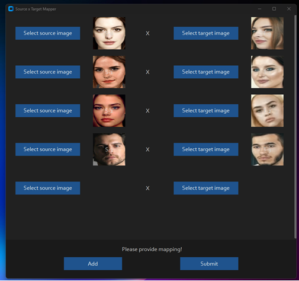

视频实时换脸DisclaimerNew FeaturesResizable Preview WindowFace MappingWant to skip the installation and just run it?How do I install it?Basic: It is more likely to work on your computer but it will also be very slow. You can follow instructions for the basic install (This usually runs via CPU)1.Setup your platform2. Clone Repository3. Download Models4. Install dependencyDONE!!! If you don't have any GPU, You should be able to run Deep-Live-Cam using python run.py command. Keep in mind that while running the program for first time, it will download some models which can take time depending on your network connection.5. Proceed if you want to use GPU acceleration (optional)CUDA Execution Provider (Nvidia)*CoreML Execution Provider (Apple Silicon)CoreML Execution Provider (Apple Legacy)DirectML Execution Provider (Windows)OpenVINO™ Execution Provider (Intel)How do I use it?For the webcam modeWebcam mode on Windows 11 using WSL2 Ubuntu (optional)1. Install WSL2 Ubuntu 2. Enable USB Support in WSL2 3. Rebuild WSL2 Ubuntu Kernel with USB and Webcam Modules 4. Set Up Deep-Live-Cam Project 5. Verify and Load Kernel Modules 6. Set Up Permissions Final Notes Troubleshooting CUDA Issues Want the Next Update Now?TODOCredits
视频实时换脸

Disclaimer
This software is meant to be a productive contribution to the rapidly growing AI-generated media industry. It will help artists with tasks such as animating a custom character or using the character as a model for clothing etc.
The developers of this software are aware of its possible unethical applications and are committed to take preventative measures against them. It has a built-in check which prevents the program from working on inappropriate media including but not limited to nudity, graphic content, sensitive material such as war footage etc. We will continue to develop this project in the positive direction while adhering to law and ethics. This project may be shut down or include watermarks on the output if requested by law.
Users of this software are expected to use this software responsibly while abiding by local laws. If the face of a real person is being used, users are required to get consent from the concerned person and clearly mention that it is a deepfake when posting content online. Developers of this software will not be responsible for actions of end-users.
New Features
Resizable Preview Window
Dynamically improve the performance by using the --resizable parameter

Face Mapping
Track faces and change it on the fly

source video

Tick this switch

Map the faces

And see the magic!
Want to skip the installation and just run it?
Windows / Nvidia CUDA still required
How do I install it?
Basic: It is more likely to work on your computer but it will also be very slow. You can follow instructions for the basic install (This usually runs via CPU)
1.Setup your platform
python (3.10 recommended)
pip
git
2. Clone Repository
https://github.com/hacksider/Deep-Live-Cam.git
3. Download Models
inswapper_128_fp16.onnx (Note: Use this replacement version if an issue occurs on your computer)
Then put those 2 files on the "models" folder
4. Install dependency
We highly recommend to work with a venv to avoid issues.
pip install -r requirements.txt
For MAC OS, You have to install or upgrade python-tk package:
brew install python-tk@3.10
DONE!!! If you don't have any GPU, You should be able to run Deep-Live-Cam using python run.py command. Keep in mind that while running the program for first time, it will download some models which can take time depending on your network connection.
5. Proceed if you want to use GPU acceleration (optional)
Click to see the details
CUDA Execution Provider (Nvidia)*
Install CUDA Toolkit 11.8
Install dependencies:
pip uninstall onnxruntime onnxruntime-gpupip install onnxruntime-gpu==1.16.3
Usage in case the provider is available:
python run.py --execution-provider cuda
CoreML Execution Provider (Apple Silicon)
Install dependencies:
pip uninstall onnxruntime onnxruntime-siliconpip install onnxruntime-silicon==1.13.1
Usage in case the provider is available:
python run.py --execution-provider coreml
CoreML Execution Provider (Apple Legacy)
Install dependencies:
pip uninstall onnxruntime onnxruntime-coremlpip install onnxruntime-coreml==1.13.1
Usage in case the provider is available:
xxxxxxxxxxpython run.py --execution-provider coreml
DirectML Execution Provider (Windows)
Install dependencies:
xxxxxxxxxxpip uninstall onnxruntime onnxruntime-directmlpip install onnxruntime-directml==1.15.1
Usage in case the provider is available:
xxxxxxxxxxpython run.py --execution-provider directml
OpenVINO™ Execution Provider (Intel)
Install dependencies:
xxxxxxxxxxpip uninstall onnxruntime onnxruntime-openvinopip install onnxruntime-openvino==1.15.0
Usage in case the provider is available:
xxxxxxxxxxpython run.py --execution-provider openvino
How do I use it?
Note: When you run this program for the first time, it will download some models ~300MB in size.
Executing python run.py command will launch this window:

Choose a face (image with desired face) and the target image/video (image/video in which you want to replace the face) and click on Start. Open file explorer and navigate to the directory you select your output to be in. You will find a directory named <video_title> where you can see the frames being swapped in realtime. Once the processing is done, it will create the output file. That's it.
For the webcam mode
Just follow the clicks on the screenshot
Select a face
Click live
Wait for a few seconds (it takes a longer time, usually 10 to 30 seconds before the preview shows up)
Just use your favorite screencapture to stream like OBS
Note: In case you want to change your face, just select another picture, the preview mode will then restart (so just wait a bit).
Additional command line arguments are given below. To learn out what they do, check this guide.
xxxxxxxxxxoptions:-h, --help show this help message and exit-s SOURCE_PATH, --source SOURCE_PATH select a source image-t TARGET_PATH, --target TARGET_PATH select a target image or video-o OUTPUT_PATH, --output OUTPUT_PATH select output file or directory--frame-processor FRAME_PROCESSOR [FRAME_PROCESSOR ...] frame processors (choices: face_swapper, face_enhancer, ...)--keep-fps keep original fps--keep-audio keep original audio--keep-frames keep temporary frames--many-faces process every face--map-faces map source target faces--nsfw-filter filter the NSFW image or video--video-encoder {libx264,libx265,libvpx-vp9} adjust output video encoder--video-quality [0-51] adjust output video quality--live-mirror the live camera display as you see it in the front-facing camera frame--live-resizable the live camera frame is resizable--max-memory MAX_MEMORY maximum amount of RAM in GB--execution-provider {cpu} [{cpu} ...] available execution provider (choices: cpu, ...)--execution-threads EXECUTION_THREADS number of execution threads-v, --version show program's version number and exit
Looking for a CLI mode? Using the -s/--source argument will make the run program in cli mode.
Webcam mode on Windows 11 using WSL2 Ubuntu (optional)
Click to see the details
If you want to use WSL2 on Windows 11 you will notice, that Ubuntu WSL2 doesn't come with USB-Webcam support in the Kernel. You need to do two things: Compile the Kernel with the right modules integrated and forward your USB Webcam from Windows to Ubuntu with the usbipd app. Here are detailed Steps:
This tutorial will guide you through the process of setting up WSL2 Ubuntu with USB webcam support, rebuilding the kernel, and preparing the environment for the Deep-Live-Cam project.
1. Install WSL2 Ubuntu
Install WSL2 Ubuntu from the Microsoft Store or using PowerShell:
2. Enable USB Support in WSL2
Install the USB/IP tool for Windows:
https://learn.microsoft.com/en-us/windows/wsl/connect-usbIn Windows PowerShell (as Administrator), connect your webcam to WSL:
xxxxxxxxxxusbipd list usbipd bind --busid x-x # Replace x-x with your webcam's bus ID usbipd attach --wsl --busid x-x # Replace x-x with your webcam's bus ID You need to redo the above every time you reboot wsl or re-connect your webcam/usb device.
3. Rebuild WSL2 Ubuntu Kernel with USB and Webcam Modules
Follow these steps to rebuild the kernel:
Start with this guide: https://github.com/PINTO0309/wsl2_linux_kernel_usbcam_enable_conf
When you reach the
sudo wget [github.com](./real_face_exchange/http://github.com/)...PINTO0309step, which won't work for newer kernel versions, follow this video instead or alternatively follow the video tutorial from the beginning: https://www.youtube.com/watch?v=t_YnACEPmrM
Additional info: https://askubuntu.com/questions/1413377/camera-not-working-in-cheese-in-wsl2
After rebuilding, restart WSL with the new kernel.
4. Set Up Deep-Live-Cam Project
Within Ubuntu:
Clone the repository:
xxxxxxxxxxgit clone [https://github.com/hacksider/Deep-Live-Cam](./real_face_exchange/https://github.com/hacksider/Deep-Live-Cam) Follow the installation instructions in the repository, including cuda toolkit 11.8, make 100% sure it's not cuda toolkit 12.x.
5. Verify and Load Kernel Modules
Check if USB and webcam modules are built into the kernel:
xxxxxxxxxxzcat /proc/config.gz | grep -i "CONFIG_USB_VIDEO_CLASS" If modules are loadable (m), not built-in (y), check if the file exists:
xxxxxxxxxxls /lib/modules/$(uname -r)/kernel/drivers/media/usb/uvc/ Load the module and check for errors (optional if built-in):
xxxxxxxxxxsudo modprobe uvcvideo dmesg | tail Verify video devices:
xxxxxxxxxxsudo ls -al /dev/video* 6. Set Up Permissions
Add user to video group and set permissions:
xxxxxxxxxxsudo usermod -a -G video $USER sudo chgrp video /dev/video0 /dev/video1 sudo chmod 660 /dev/video0 /dev/video1 Create a udev rule for permanent permissions:
xxxxxxxxxxsudo nano /etc/udev/rules.d/81-webcam.rules Add this content:
xxxxxxxxxxKERNEL=="video[0-9]*", GROUP="video", MODE="0660"
Reload udev rules:
xxxxxxxxxxsudo udevadm control --reload-rules && sudo udevadm trigger Log out and log back into your WSL session.
Start Deep-Live-Cam with
python run.py --execution-provider cuda --max-memory 8where 8 can be changed to the number of GB VRAM of your GPU has, minus 1-2GB. If you have a RTX3080 with 10GB I suggest adding 8GB. Leave some left for Windows.
Final Notes
Steps 6 and 7 may be optional if the modules are built into the kernel and permissions are already set correctly.
Always ensure you're using compatible versions of CUDA, ONNX, and other dependencies.
If issues persist, consider checking the Deep-Live-Cam project's specific requirements and troubleshooting steps.
By following these steps, you should have a WSL2 Ubuntu environment with USB webcam support ready for the Deep-Live-Cam project. If you encounter any issues, refer back to the specific error messages and troubleshooting steps provided.
Troubleshooting CUDA Issues
If you encounter this error:
xxxxxxxxxx[ONNXRuntimeError] : 1 : FAIL : Failed to load library [libonnxruntime_providers_cuda.so](./real_face_exchange/http://libonnxruntime_providers_cuda.so/) with error: libcufft.so.10: cannot open shared object file: No such file or directory
Follow these steps:
Install CUDA Toolkit 11.8 (ONNX 1.16.3 requires CUDA 11.x, not 12.x):
https://developer.nvidia.com/cuda-11-8-0-download-archive
select: Linux, x86_64, WSL-Ubuntu, 2.0, deb (local)Check CUDA version:
xxxxxxxxxx/usr/local/cuda/bin/nvcc --version If the wrong version is installed, remove it completely:
https://askubuntu.com/questions/530043/removing-nvidia-cuda-toolkit-and-installing-new-oneInstall CUDA Toolkit 11.8 again https://developer.nvidia.com/cuda-11-8-0-download-archive, select: Linux, x86_64, WSL-Ubuntu, 2.0, deb (local)
xxxxxxxxxxsudo apt-get -y install cuda-toolkit-11-8 Want the Next Update Now?
If you want the latest and greatest build, or want to see some new great features, go to our experimental branch and experience what the contributors have given.
TODO
✔️ Support multiple faces feature
Develop a version for web app/service
UI/UX enhancements for desktop app
Speed up model loading
Speed up real-time face swapping
Note: This is an open-source project, and we’re working on it in our free time. Therefore, features, replies, bug fixes, etc., might be delayed. We hope you understand. Thanks.
Credits
ffmpeg: for making video related operations easy
deepinsight: for their insightface project which provided a well-made library and models. Please be reminded that the use of the model is for non-commercial research purposes only.
havok2-htwo : for sharing the code for webcam
GosuDRM : for uncensoring roop
pereiraroland26 : Multiple faces support
vic4key : For supporting/contributing on this project
and all developers behind libraries used in this project.
Foot Note: This is originally roop-cam, see the full history of the code here. Please be informed that the base author of the code is s0md3v